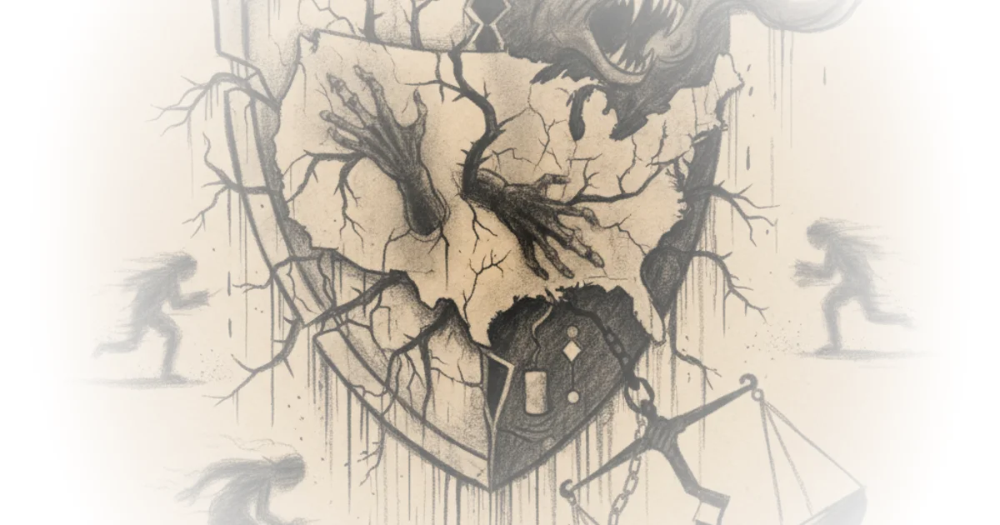

America's Crime Gap Is Not a Feeling
The United States murder rate runs between five and ten times higher than that of most other wealthy nations. Not double. Not triple. Five to ten times. That single statistic anchors Noah Smith's argument that crime, more than healthcare costs or housing shortages or inequality, is what makes American life feel tangibly worse than life in peer countries.
Smith, who writes the Substack newsletter Noahpinion, builds his case methodically. He works through the usual suspects that dominate policy debates and knocks them down one by one. Healthcare? About 92 percent of Americans have insurance, and out-of-pocket costs as a share of total spending are actually lower than in most rich countries. Housing? Expensive, yes, but expensive everywhere, and American homes are much bigger. Inequality? The U.S. fiscal system is more redistributive than most people realize.

Then he arrives at crime, and the comparison stops being a matter of degree.
This is an astonishingly huge difference. America's murder rate is between five and ten times as high as that of most rich countries.
The Progressive Blindspot
Smith does not shy away from assigning blame for the political failure to address this gap. He points directly at a strain of progressive thought that treats tough-on-crime policy as inherently racist, citing the ACLU's response to Biden's Safer America Plan and the intellectual tradition running through Michelle Alexander's The New Jim Crow and Ta-Nehisi Coates's critiques of the carceral state.
Extreme tolerance of public disorder, and downplaying the importance of crime, is a hallmark of modern progressive American culture.
He is careful to note that progressive attitudes did not create America's crime problem, which long predates the current ideological moment. But he argues they prevent honest conversation about it.
What those progressive attitudes do do, I think, is to prevent us from talking about how important the crime problem is for the United States, and from coming up with serious efforts to solve it.
This is where the argument is on its strongest footing. The data on policing effectiveness is robust. More police presence does reduce crime, through both deterrence and incapacitation. Smith cites this evidence directly, and it holds up under scrutiny.
Crime as the Root of Suburban America
The most original section of the piece connects crime to a problem that urbanists rarely trace back to its source: why American cities look the way they do. Smith argues that car-centric suburbanization is not simply a matter of preference for big houses and cheap land. It is, in significant part, a rational defensive response to persistently high crime.
As an American, when you go to a European city or an Asian city — or even to Mexico City — and you see pretty buildings and peaceful clean streets and there are nice trains and buses everywhere, what you are seeing is a lack of crime.
The chain of causation he traces is compelling. Crime drives middle-class flight from cities. NIMBYs use the threat of crime to block affordable housing. Fear of disorder on transit deters ridership and station construction. The result is a built environment shaped around avoiding other people rather than living among them.
Smith cites Cullen and Levitt's 1999 research showing that each reported city crime corresponds to roughly a one-person decline in city population, with educated households and families with children being the most responsive. He also points to BART's experience installing ticket gates, which reduced crime by 54 percent over the objections of progressive activists.
Households with high levels of education or with children present are most responsive to changes in crime rates.
The Transit Problem Is a Safety Problem
Smith includes a lengthy and vivid passage from the blogger Cartoons Hate Her describing the specific fear that women and parents face on public transit. The account is effective precisely because it is so concrete: a man screaming threats twenty feet away, the impossibility of escape on a moving subway car, the steady drumbeat of stranger-on-stranger violence that makes rational people avoid the system entirely.
Since 2009, assaults on public transit in New York City have tripled... Subway assaults also often involve strangers. When the attack is sexual, the victim is almost always a woman — and New York City alone accounts for around 4,000 sex crimes on public transit every year.
The numbers back up the fear. And they explain, more persuasively than any urbanist manifesto, why American cities cannot simply copy European transit models without first addressing the safety gap that makes those models unworkable here.
Where the Argument Thins
Smith acknowledges that he is not addressing root causes in this piece, deferring that to a future post. That is a significant gap. Identifying crime as America's most distinctive weakness is useful, but without engaging with why the murder rate is so high, the analysis risks becoming a sophisticated way of saying "things are bad." The briefest mention of gun policy would have strengthened the piece considerably, given that firearms are the most obvious variable separating the United States from every peer nation on homicide statistics.
There is also a tension in how Smith handles the progressive critique. He is right that some progressive rhetoric minimizes the importance of public safety. But his framing occasionally slides from "progressive attitudes prevent us from talking about crime" to something closer to "progressives are the reason crime is tolerated," which overstates the political influence of activist organizations on actual policy outcomes. Most American cities, including progressive ones, spend enormous portions of their budgets on policing.
I am not going to claim that progressive attitudes are the reason America's crime rate is much higher than crime rates in other countries. The U.S. has probably been more violent than countries in Asia and Europe throughout most of its history.
The Unsheltered Crisis
Smith draws a careful distinction between homelessness rates overall, where the United States is not exceptional, and unsheltered homelessness, where it is. The OECD data he cites shows the U.S. with a dramatically higher "living rough" population than peer nations. He is honest about the limits of this comparison, noting that most homeless people are harmless and that not all public disorder involves homeless individuals.
Obviously, unsheltered homelessness and public disorder aren't the same thing — you can have lots of violent or threatening people on the streets who do have homes, and most homeless people are harmless. But homeless people do commit violent crime at much higher rates than other people.
This is the kind of uncomfortable fact that Smith handles well throughout the piece. He states it plainly, provides the caveat, and moves on without either sensationalizing or minimizing.
Bottom Line
Smith has written a valuable corrective to the standard narrative about what ails America. Healthcare, housing, inequality, and transit all matter. But none of them explain the visceral difference that Americans notice when they visit Tokyo or Copenhagen or even Mexico City. Crime does.
The piece is strongest as a diagnostic exercise, weaker as a prescription. Smith proves that crime is the variable that makes America feel worse than its GDP would suggest, and that progressive reluctance to prioritize public safety has made the problem harder to address. What he does not do, and openly admits he has not done, is explain why America is so violent in the first place or what realistic policy changes could close the gap. That is the harder question, and the one that will determine whether this essay becomes a starting point for serious reform or just another well-argued lament.